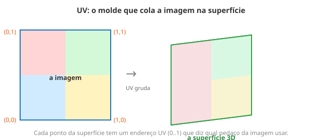

← Mapa do curso · Marco 2 · Módulo 9 de 11
Seu cubo do M7 era colorido por contas. Mas e quando você quer vestir o objeto com uma imagem de verdade — madeira, tijolo, o rosto de um personagem? Isso é uma textura. E o truque que cola a imagem na superfície tem nome que você já conhece de outro lugar: UV.
Uma textura é só uma imagem. O shader, pra cada pixel da superfície, pergunta: "qual cor
da imagem eu uso aqui?". A função que responde é texture2D(imagem, uv): você dá um
endereço uv (de 0 a 1) e ela devolve a cor daquele ponto da imagem.
v_uv era a posição do pixel na tela. Aqui, UV é o endereço na
imagem/superfície: que pedacinho da figura cola em cada ponto do objeto. Mesma faixa
0 a 1, significado novo.

O playground abaixo mostra uma textura de exemplo (4 quadrantes coloridos, barra branca no topo,
pontinho preto no canto de baixo — pra você notar a orientação). Ele usa
texture2D(u_tex, v_uv). Agora a brincadeira: troque v_uv por
fract(v_uv * 3.0) e veja a imagem repetir em ladrilhos. (Lembra o
fract do M3? Ele reinicia de 0 a cada número inteiro — por isso repete.)
Sem rodar — preveja: com fract(v_uv * 3.0), quantas cópias da
imagem vão aparecer na horizontal? E na vertical? Total de ladrilhos: ______
Agora teste. (Dica: 3 na horizontal × 3 na vertical.)
O mesmo texture2D(u_tex, v_uv), agora num cubo girando. Cada face do cubo tem suas
coordenadas UV, então a imagem cola direitinho em cada lado. Repare na barra branca e no pontinho
preto pra conferir que a imagem não está de cabeça pra baixo.
texture2D(u_tex, uv).fract(uv * N) faz a imagem repetir em N ladrilhos (recupera o M3).O shader abaixo pinta um gradiente horizontal simples (v_uv.x). Sua missão: faça
esse gradiente repetir 3 vezes na horizontal, usando fract — é o mesmo
truque que ladrilha uma textura. Edite, dê Test Drive e clique Conferir.
Ligue cada termo ao seu significado (escreva a letra):
texture2D C. faz o padrão repetir em ladrilhosfract(uv*N) D. lê a cor da imagem num endereço UV← Anterior: Vetores & Coordenadas · Próximo: Normais & Luz Difusa →